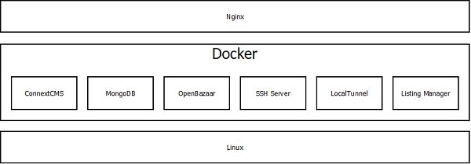

Server Deployment
The server deployment software is a collection of Dockerized packages, all orchestrated with Docker Compose. This software is targeted for cloud VPS hosts like Digital Ocean, Vultr, AWS EC2, etc running Ubuntu Linux. The purpose of using Docker is to make deployment of P2P VPS servers as easy as possible. With a handful of commands, new servers join the market quickly and easily.
Below is a diagram of the Server Deployment software stack. Internet traffic is first routed by Nginx to the appropriate Docker container. Nginx also handles SSL encryption using a Let's Encrypt certificate. All of the Docker containers ride on top of the underlying Linux host operating system.
The various Docker containers are networked and orchestrated using a Docker Compose
.yml file. Each container writes to it's own debug logs which are stored in the
hidden .p2pvps folder in the users home directory.

Table of Contents #
ConnextCMS #
This is where information will go about this Docker container.
MongoDB #
This is where information will go about this Docker container.
Listing-Manager #
This is where information will go about this Docker container.
OpenBazaar #
This is where information will go about this Docker container.
SSH-Server #
This is where information will go about this Docker container.
LocalTunnel #
This is where information will go about this Docker container.